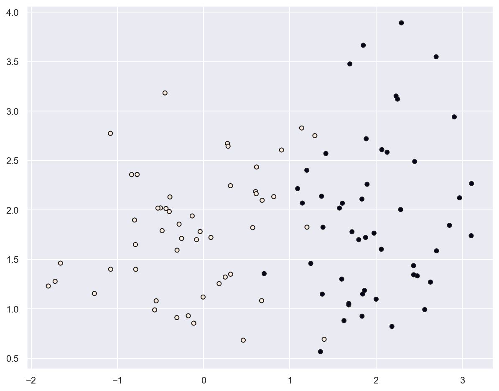
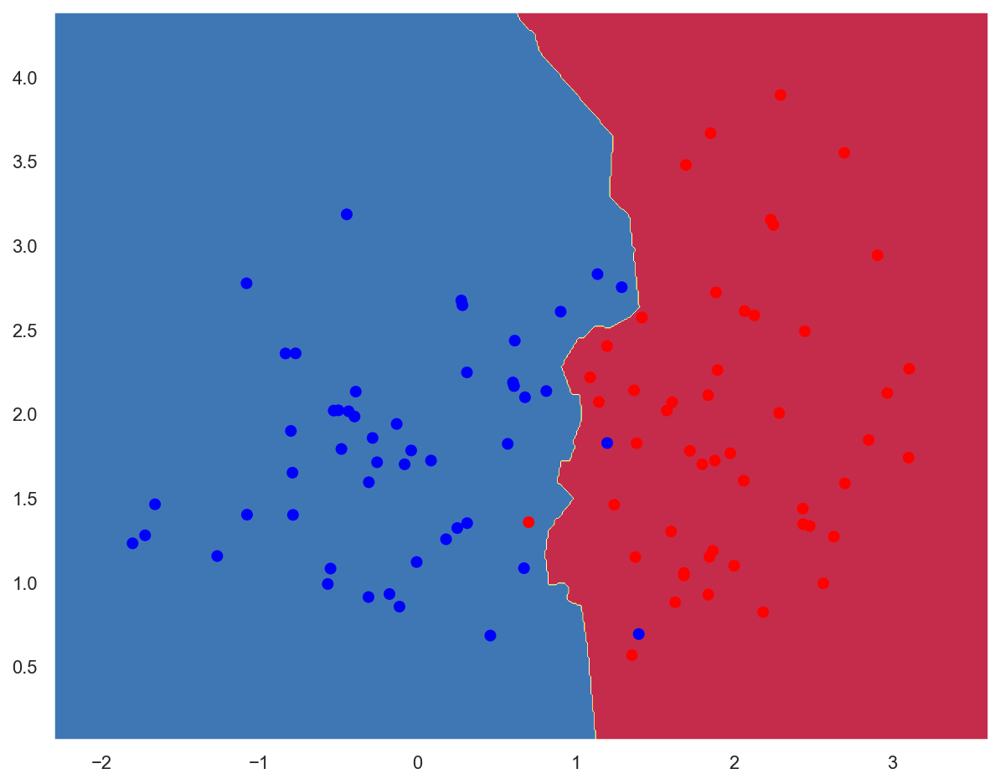
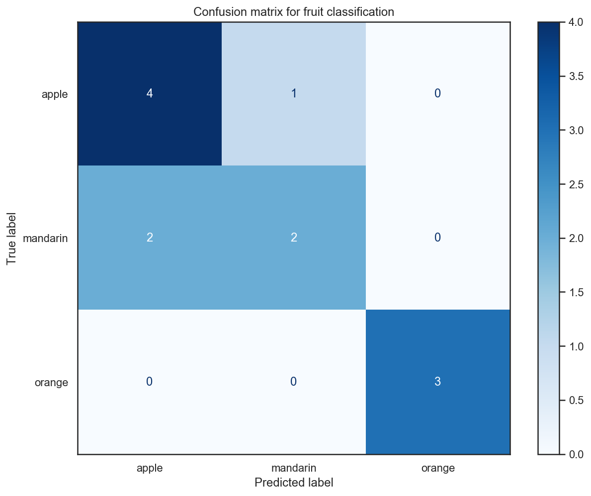
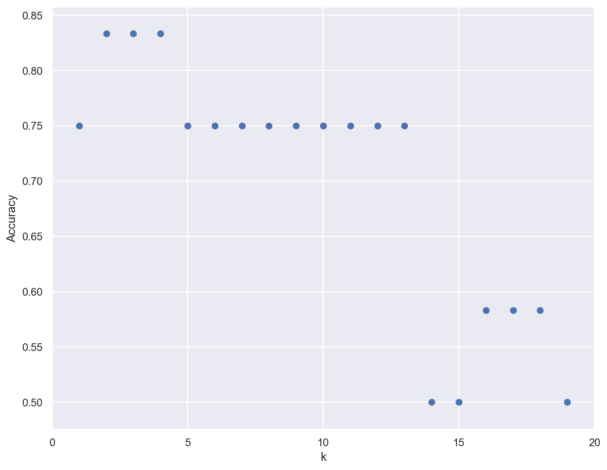

K-Nearest Neighbors#
Environment setup#
import platform
print(f"Python version: {platform.python_version()}")
assert platform.python_version_tuple() >= ("3", "6")
import numpy as np
import matplotlib.pyplot as plt
from matplotlib.colors import ListedColormap
import seaborn as sns
import pandas as pd
print(f"NumPy version: {np.__version__}")
Python version: 3.7.5
NumPy version: 1.18.1
# Setup plots
%matplotlib inline
plt.rcParams["figure.figsize"] = 10, 8
%config InlineBackend.figure_format = 'retina'
sns.set()
# Import ML packages
import sklearn
print(f"scikit-learn version: {sklearn.__version__}")
from sklearn.datasets import make_classification
from sklearn.neighbors import KNeighborsClassifier
from sklearn.model_selection import train_test_split
from sklearn.preprocessing import StandardScaler
from sklearn.metrics import plot_confusion_matrix, classification_report
scikit-learn version: 0.22.1
Show code cell source
def plot_decision_boundary(pred_func, X, y, figure=None):
"""Plot a decision boundary"""
if figure is None: # If no figure is given, create a new one
plt.figure()
# Set min and max values and give it some padding
x_min, x_max = X[:, 0].min() - 0.5, X[:, 0].max() + 0.5
y_min, y_max = X[:, 1].min() - 0.5, X[:, 1].max() + 0.5
h = 0.01
# Generate a grid of points with distance h between them
xx, yy = np.meshgrid(np.arange(x_min, x_max, h), np.arange(y_min, y_max, h))
# Predict the function value for the whole grid
Z = pred_func(np.c_[xx.ravel(), yy.ravel()])
Z = Z.reshape(xx.shape)
# Plot the contour and training examples
plt.contourf(xx, yy, Z, cmap=plt.cm.Spectral)
cm_bright = ListedColormap(["#FF0000", "#0000FF"])
plt.scatter(X[:, 0], X[:, 1], c=y, cmap=cm_bright)
The k-nearest neighbors algorithm#
K-NN in a nutshell#
Simple, instance-based algorithm: prediction is based on the \(k\) nearest neighbors of a data sample.
No model creation, training = storing samples.

Example: planar data classification#
# Generate 2D data
x_train, y_train = make_classification(
n_features=2, n_redundant=0, n_informative=2, random_state=1, n_clusters_per_class=1
)
rng = np.random.RandomState(2)
x_train += 2 * rng.uniform(size=x_train.shape)
print(f"x_train: {x_train.shape}. y_train: {y_train.shape}")
x_train: (100, 2). y_train: (100,)
# Plot generated data
plt.scatter(x_train[:, 0], x_train[:, 1], marker="o", c=y_train, s=25, edgecolor="k")
plt.show()

# Create a K-NN classifier
knn_2d_clf = KNeighborsClassifier(n_neighbors=5)
knn_2d_clf.fit(x_train, y_train)
KNeighborsClassifier(algorithm='auto', leaf_size=30, metric='minkowski',
metric_params=None, n_jobs=None, n_neighbors=5, p=2,
weights='uniform')
plot_decision_boundary(lambda x: knn_2d_clf.predict(x), x_train, y_train)

# Evaluate classifier
train_acc = knn_2d_clf.score(x_train, y_train)
print(f"Training accuracy: {train_acc:.05f}")
Training accuracy: 0.97000
Example: fruits classification#
Data loading#
# Download data as a text file
!wget http://www.eyrignoux.com.fr/coursIA/machineLearning/fruit_data_with_colors.txt -O fruit_data_with_colors.txt
Show code cell output
--2022-03-22 11:32:27-- http://www.eyrignoux.com.fr/coursIA/machineLearning/fruit_data_with_colors.txt
Résolution de www.eyrignoux.com.fr (www.eyrignoux.com.fr)… 62.210.16.62
Connexion à www.eyrignoux.com.fr (www.eyrignoux.com.fr)|62.210.16.62|:80… connecté.
requête HTTP transmise, en attente de la réponse… 301 Moved Permanently
Emplacement : https://www.eyrignoux.com.fr/coursIA/machineLearning/fruit_data_with_colors.txt [suivant]
--2022-03-22 11:32:27-- https://www.eyrignoux.com.fr/coursIA/machineLearning/fruit_data_with_colors.txt
Connexion à www.eyrignoux.com.fr (www.eyrignoux.com.fr)|62.210.16.62|:443… connecté.
requête HTTP transmise, en attente de la réponse… 200 OK
Taille : 2370 (2,3K) [text/plain]
Sauvegarde en : « fruit_data_with_colors.txt »
fruit_data_with_col 100%[===================>] 2,31K --.-KB/s in 0s
2022-03-22 11:32:29 (48,1 MB/s) — « fruit_data_with_colors.txt » sauvegardé [2370/2370]
# Load data into a DataFrame
fruits = pd.read_table("fruit_data_with_colors.txt")
# Show 10 random samples
fruits.sample(n=10)
| fruit_label | fruit_name | fruit_subtype | mass | width | height | color_score | |
|---|---|---|---|---|---|---|---|
| 0 | 1 | apple | granny_smith | 192 | 8.4 | 7.3 | 0.55 |
| 25 | 3 | orange | spanish_jumbo | 356 | 9.2 | 9.2 | 0.75 |
| 11 | 1 | apple | braeburn | 172 | 7.1 | 7.6 | 0.92 |
| 56 | 4 | lemon | unknown | 116 | 5.9 | 8.1 | 0.73 |
| 8 | 1 | apple | braeburn | 178 | 7.1 | 7.8 | 0.92 |
| 14 | 1 | apple | golden_delicious | 152 | 7.6 | 7.3 | 0.69 |
| 21 | 1 | apple | cripps_pink | 156 | 7.4 | 7.4 | 0.84 |
| 35 | 3 | orange | turkey_navel | 150 | 7.1 | 7.9 | 0.75 |
| 58 | 4 | lemon | unknown | 118 | 6.1 | 8.1 | 0.70 |
| 37 | 3 | orange | turkey_navel | 154 | 7.3 | 7.3 | 0.79 |
Data analysis#
# Evaluate class distribution
samples_count = fruits.size
for name in fruits["fruit_name"].unique():
class_percent = fruits[fruits.fruit_name == name].size / samples_count
print(f"{name}s : {class_percent * 100:.1f}%")
apples : 32.2%
mandarins : 8.5%
oranges : 32.2%
lemons : 27.1%
# For this scenario, we use only the mass, width, and height features of each fruit instance
x = fruits[["mass", "width", "height"]]
# Objective is to predict the fruit class
y = fruits["fruit_label"]
print(f"x: {x.shape}. y: {y.shape}")
x: (59, 3). y: (59,)
Data preprocessing#
# Split data between training and test sets with a 80/20 ratio
x_train, x_test, y_train, y_test = train_test_split(x, y, test_size=0.2)
print(f"x_train: {x_train.shape}. y_train: {y_train.shape}")
print(f"x_test: {x_test.shape}. y_test: {y_test.shape}")
x_train: (47, 3). y_train: (47,)
x_test: (12, 3). y_test: (12,)
# Standardize data
scaler = StandardScaler().fit(x_train)
x_train = scaler.transform(x_train)
x_test = scaler.transform(x_test)
Classifier creation and “training”#
# k = 5
knn_fruits_clf = KNeighborsClassifier(n_neighbors=5)
knn_fruits_clf.fit(x_train, y_train)
KNeighborsClassifier(algorithm='auto', leaf_size=30, metric='minkowski',
metric_params=None, n_jobs=None, n_neighbors=5, p=2,
weights='uniform')
Classifier evaluation#
# Compute accuracy on training and test sets
train_acc = knn_fruits_clf.score(x_train, y_train)
test_acc = knn_fruits_clf.score(x_test, y_test)
print(f"Training accuracy: {train_acc:.05f}")
print(f"Test accuracy: {test_acc:.05f}")
Training accuracy: 0.89362
Test accuracy: 0.75000
# Plot the confusion matrix for test data
with sns.axes_style("white"): # Temporary hide Seaborn grid lines
display = plot_confusion_matrix(
knn_fruits_clf,
x_test,
y_test,
display_labels=fruits["fruit_name"].unique(),
cmap=plt.cm.Blues,
)
display.ax_.set_title("Confusion matrix for fruit classification")
plt.show()

# Compute classification metrics
print(classification_report(y_test, knn_fruits_clf.predict(x_test)))
precision recall f1-score support
1 0.67 0.80 0.73 5
3 0.67 0.50 0.57 4
4 1.00 1.00 1.00 3
accuracy 0.75 12
macro avg 0.78 0.77 0.77 12
weighted avg 0.75 0.75 0.74 12
Using the classifier for predictions#
# create a mapping from fruit label value to fruit name to make results easier to interpret
lookup_fruit_name = dict(zip(fruits.fruit_label.unique(), fruits.fruit_name.unique()))
# first example: a small fruit with mass 20g, width 4.3 cm, height 5.5 cm
fruit_prediction = knn_fruits_clf.predict([[20, 4.3, 5.5]])
lookup_fruit_name[fruit_prediction[0]]
'orange'
# second example: a larger, elongated fruit with mass 100g, width 6.3 cm, height 8.5 cm
fruit_prediction = knn_fruits_clf.predict([[100, 6.3, 8.5]])
lookup_fruit_name[fruit_prediction[0]]
'orange'
Importance of the k parameter#
k_range = range(1, 20)
scores = []
# Train several classifiers with different values for k
for k in k_range:
knn_clf = KNeighborsClassifier(n_neighbors=k)
knn_clf.fit(x_train, y_train)
scores.append(knn_clf.score(x_test, y_test))
# Plot results
plt.figure()
plt.xlabel('k')
plt.ylabel('Accuracy')
plt.scatter(k_range, scores)
plt.xticks([0,5,10,15,20]);

TODO
Planar data: add multiclass data
Better looking graphs: https://stackabuse.com/k-nearest-neighbors-algorithm-in-python-and-scikit-learn/